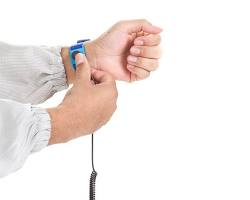
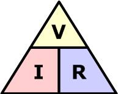
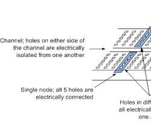

Electronics is the study of controlling the flow of electrons.
The Golden Rules:

Proper ESD Protection
Calculating Flow:
Example: If V=9V and R=470Ω, what is I?

Before we build, look at the physical parts in your kit:
Resistors: Look for the colored bands. They don't have a "side"—you can plug them in either way.
LEDs: Light Emitting Diodes. These ARE polarized.
Short Leg = Negative (-) | Long Leg = Positive (+)
Jumper Wires: Think of these as your "Electron Highways."
Breadboards: These allow us to prototype without permanent soldering.
The Three Big Settings:
⚠️ Never check resistance on a live circuit!
Common Mistakes:

Horizontal rows are connected!
Tomorrow: Series vs. Parallel—Why Christmas lights used to be a nightmare.